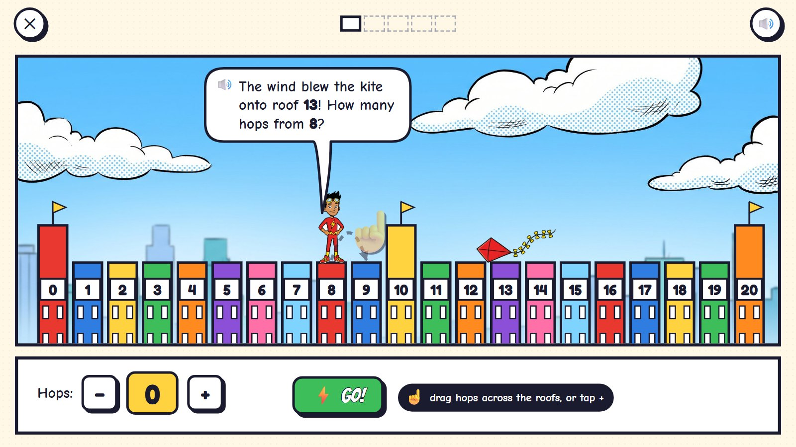
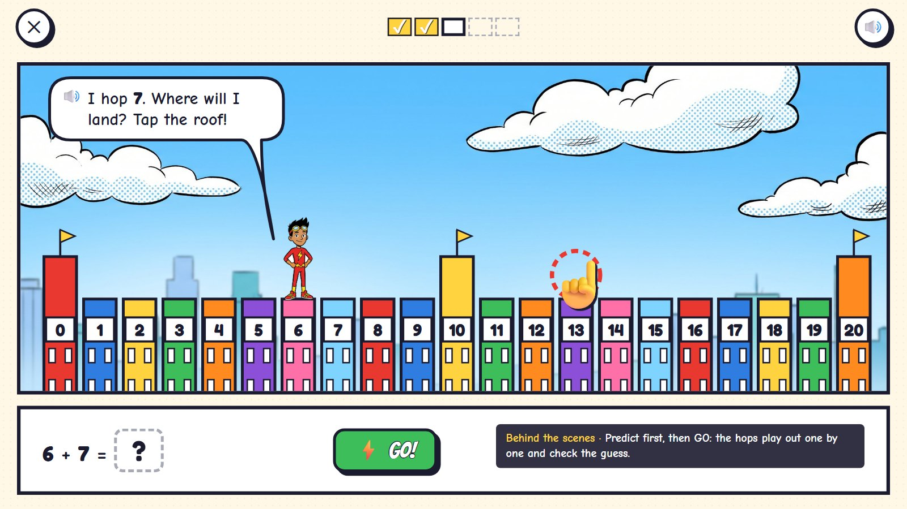
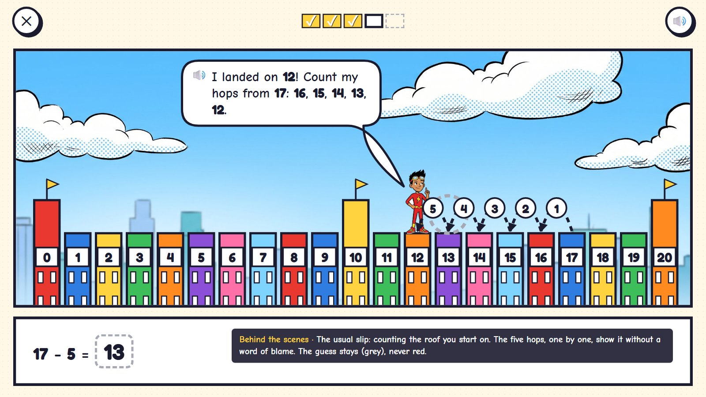
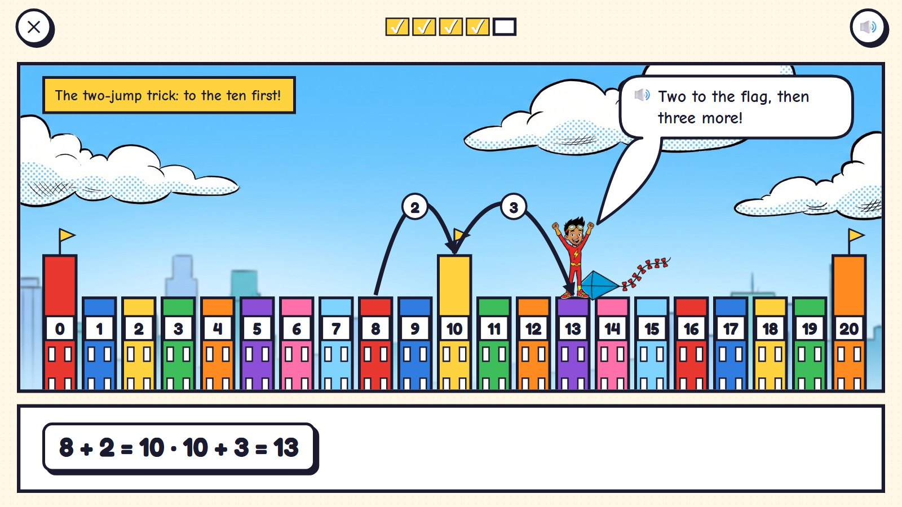
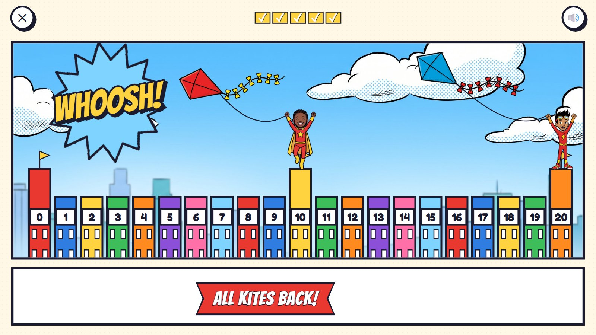

Rooftop Hops
The wind blew the kites onto the city's rooftops. The rooftops, numbered 0 to 20, are one long panel, and every tenth roof is a taller building with a flag. Zip hops from roof to roof. The child sets how many hops, or taps the roof where Zip will land, then presses GO and watches the hops play out. Adding is hopping on; taking away is hopping back towards 0.
Grades K–2 · ages 5–7 hero: Zip panel power: set the hops, or tap where he will land; one long panel
The maths: Add and take away within 20 on a number line; count on and back; go through ten in two jumps; then jumps of ten to 100. One activity is five rounds, about two minutes. Everything works with one finger or a mouse.
🎉 The fun
Zip boings from roof to roof, and the kite is caught by the child's own count.
🎥 The view
One long panel: the skyline slides sideways as Zip runs (0 to 20 fits; to 100 it scrolls).
🎆 The finale
All the kites fly again over the rooftops (3 seconds).
Six moments

1Roof 8 to roof 13
One long panel of rooftops numbered 0 to 20. Zip on roof 8, the kite on 13. A see-through hand drags one hop.
🔊 The wind blew the kite onto roof 13! How many hops from 8?
The rooftops are a number line the child can walk along; the numbers on the roofs are drawn by code.

2Five hops, GO!
Zip bounces roof to roof, each hop numbered, and grabs the kite.
🔊 8 and 5 more is 13!
The sum appears only after the hops: 8 + 5 = 13.

3Where will he land?
Zip on 6 will hop 7. The child taps the roof where he will land, then presses GO.
🔊 I hop 7. Where will I land? Tap the roof!
Predict first, then GO: the hops play out one by one and check the guess.

4A wrong try
From 17 back 5: the child guessed 13. Zip's five hops land on 12; the guess stays, in grey.
🔊 I landed on 12! Count my hops from 17: 16, 15, 14, 13, 12.
The usual slip is counting the roof you start on. The hops, one by one, show it without a word of blame.

5The two-jump trick
Age 6: from 8, two hops to the flag roof (10), then three more: 13.
🔊 Two to the flag, then three more!
Going through ten, the way to add past ten, shown as two big jumps.

6All kites back
Both kites fly again over the rooftops; Zip and the child's hero cheer.
🔊 All kites back!
Mock-ups: Gemini's comic pictures (scenes, heroes, things) with the maths drawn by code in the same inked look, the way the app would draw it, so every count, clock and colour is exact.
What is asked, for one age
- Roof 8 to the kite on 13: how many hops?
- Zip on 6 hops 7: where will he land?
- From 17 back 5: where will he land?
- 9 + 4 by the flag roof: 9 + 1 + 3
- Which roof is 3 more than 15?
One activity card. The same activity serves other ages with other numbers:
| Age | What changes |
|---|---|
| 5 | Within 10, one roof at a time; Zip's hops are counted aloud. |
| 6 | Within 20: the two-jump trick through the flag roof (10). |
| 7 | To 100: the skyline zooms out so every flag roof is a ten; jumps of ten, then ones (47 + 25). |
Wrong answers we expect, and what happens
| Mistake | Looks like | What happens (never red, never "wrong") |
|---|---|---|
| Counting the start roof | lands one short | the hops are numbered one by one from the next roof |
| Hopping the wrong way | adds when it says back | Zip hops towards 20; "Back means towards 0!" |
| A ten off | 47 + 25 = 62 | at age 7 the tens are flag-to-flag leaps, counted 57, 67 |
| Guessing without counting | taps any roof | the guess stays; GO plays the hops out and shows where he really lands |
What it needs
- The sky over the city (one wide picture)
- Roofs, numbers and hops drawn by code (any range)
- Zip in four poses
- Two kites (cut-outs)
- Voice: counting on and back, tips
Test robot: Reads the start and the target from the question, sets the hops or taps the landing roof, checks where Zip lands, and once counts the start roof on purpose.
One question
← Back to Comic City · Kitten Rescue · Missing Pieces · Rooftop Hops · Clock Tower · Echo's Copies · Colour Lab · Sticker Pack